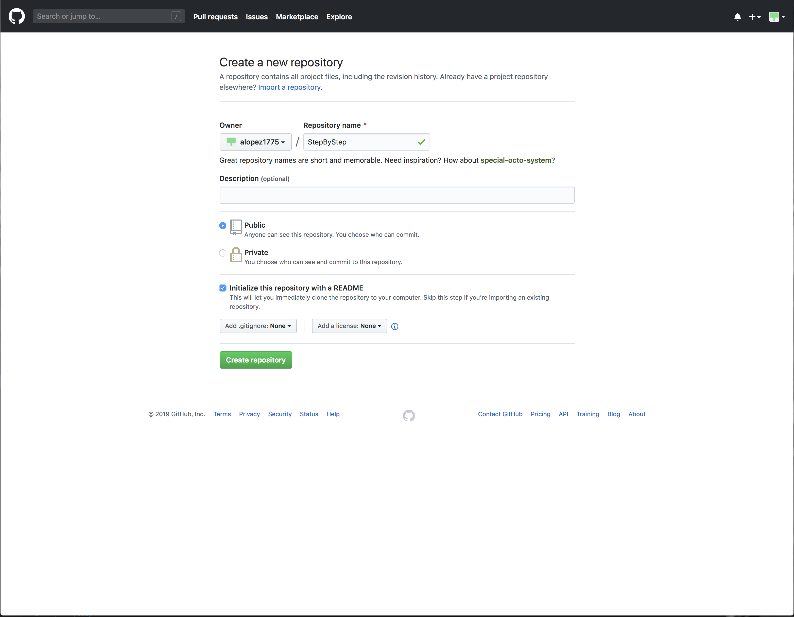
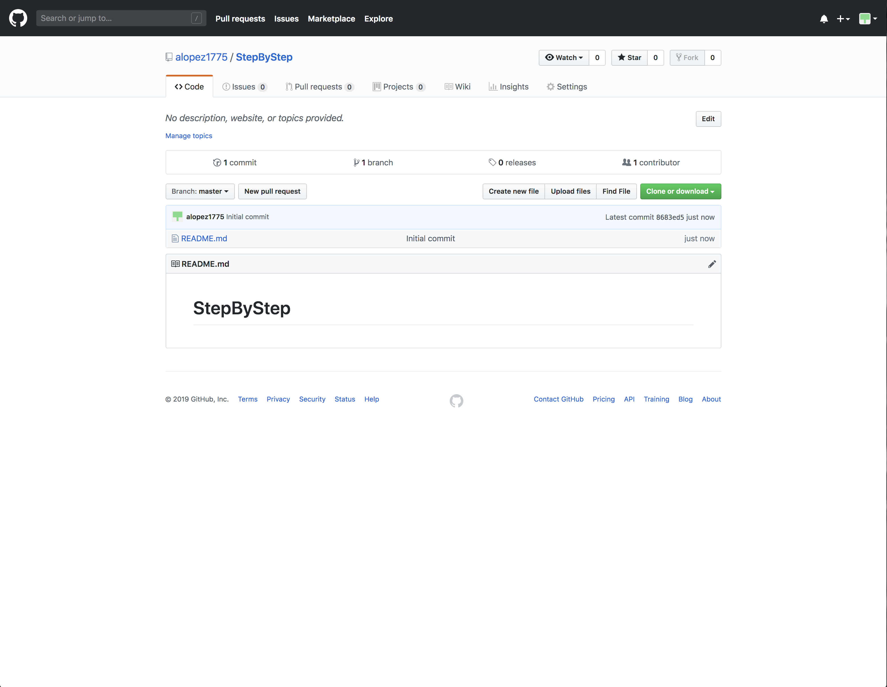
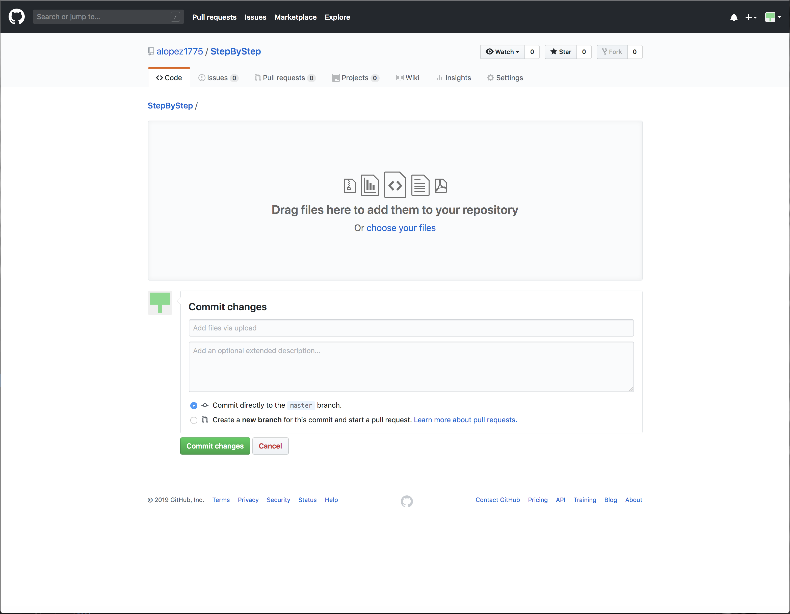
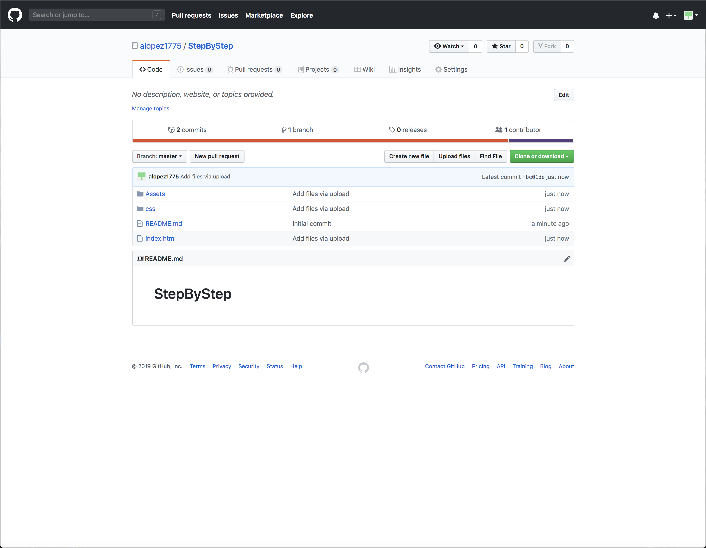
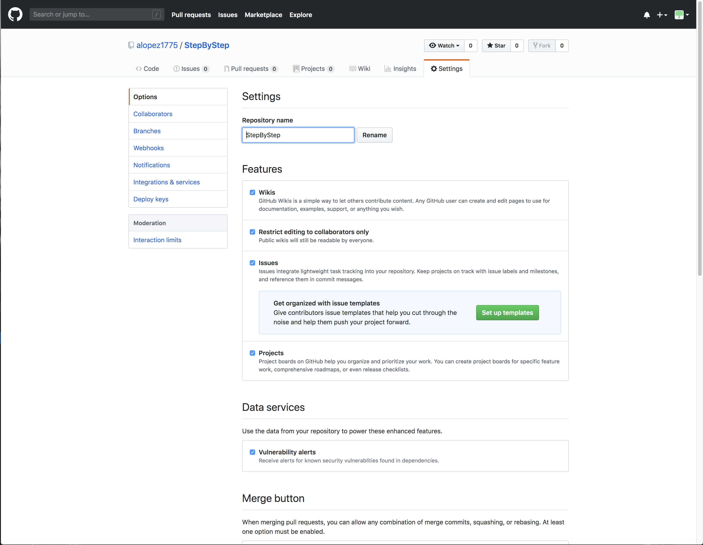
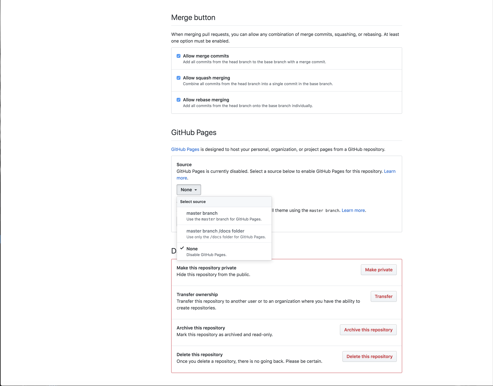
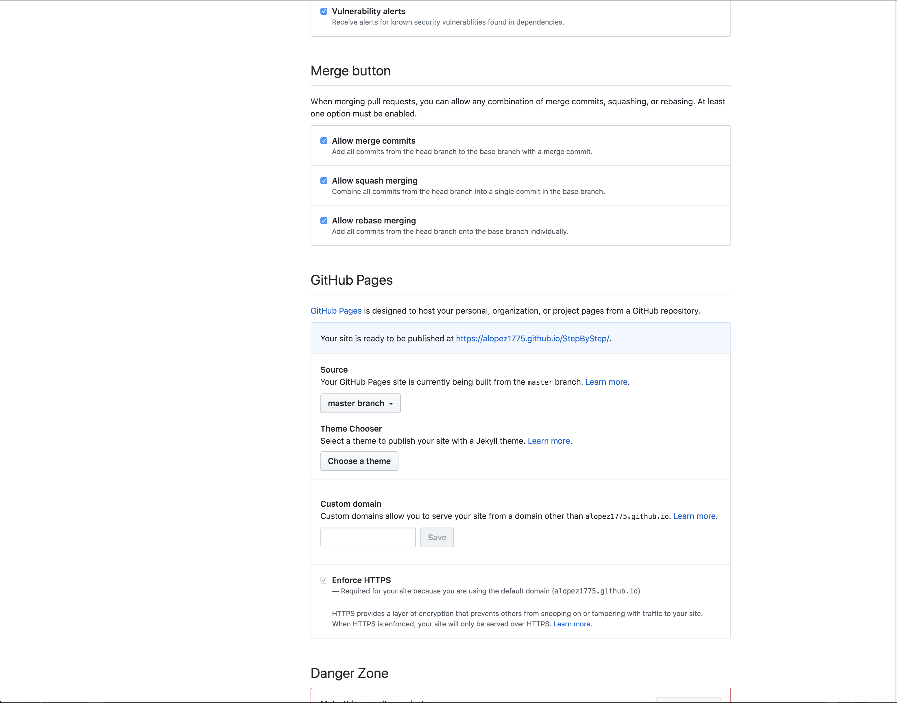

Find the plus icon in the top right of page and click to open drop down menu. Click New repository
In the Repository name text box add the name of the repository you want to create. Set to public and check Initialize this repository with a README. Create repository.
After creating the repository find the upload file button and click to upload code.
Either click choose your files link in the middle of page or drag files into the page.
Find the settings tab in the far righ.
In the settings scroll down the page to find GitHub Pages
In the GitHub Pages click None and change to master branch
If all goes right the page refreshes and puts you back top of the settings page. scroll down to Github Pages again and a link should be on the very top of the GitHub Pages.